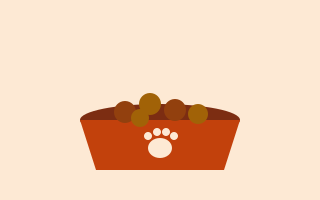
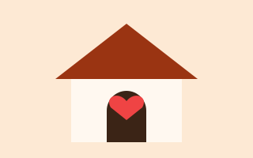
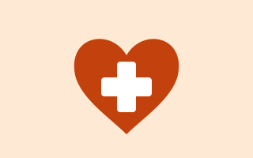

Pote Cheio
Pontos de alimentação espalhados pelo bairro, reabastecidos diariamente com ração e água por voluntários.
Como ajudar: doe ração ou adote um ponto para abastecer.
Conheça as três frentes de trabalho da Pata Amiga e veja como você pode participar.

Pontos de alimentação espalhados pelo bairro, reabastecidos diariamente com ração e água por voluntários.
Como ajudar: doe ração ou adote um ponto para abastecer.

Famílias acolhem um animal resgatado por algumas semanas, até que ele encontre um lar definitivo.
Como ajudar: ofereça sua casa como lar temporário ou adote.

Mutirões de vacinação e castração em parceria com clínicas veterinárias da região.
Como ajudar: seja voluntário nos mutirões ou divulgue as datas.